İtaliya
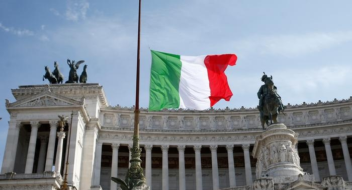
İtaliya, Cənubi Avropada, Aralıq dənizində sahili olan bir yarımadadır. İsveçrə Fransa, Sloveniya və
Avstriya ilə həmsərhəddir. Siciliya və Sardiniya da İtaliyanın bir hissəsidir. İtaliya, 61.000.000 əhalisi
olan Avropanın ən çox əhalisi olan 4 ölkəsindən biridir. Sahəsi 302.000 kvadrat metrdir. İtaliyanın iqlimi
mülayimdir. İtaliya Roma İmperatorluğuna ev sahibliyi edən ölkələrdən biridir. Onun dini inancı xristian
katolikidir. Xristian Katolik təriqətinin mərkəzi də Vatikandır. Tarixi irslə zəngin bir ölkədir. İtaliya
çoxlu turist qəbul edir. İtaliya bir çox təşkilatın üzv dövlətlərindən biridir. G7 Avropa Birliyi, NATO,
OECD, Birləşmiş Millətlər Təşkilatı, Dünya Ticarət Təşkilatıdır. İqtisadiyyatı yüksək səviyyədə inkişaf
etmişdir. Turizm baxımından çoxlu turist qəbul edən ölkələrdən biridir. Roma İtaliyanın paytaxtıdır. İtaliya
20 bölgəyə bölünür. İtaliya daxilində Vatikan, San Marino və İtaliya 3 fərqli ölkə olaraq düşünülə bilər.
İtaliyanın ən turistik şəhərləri Roma, Milan, Neapol, Palermo, Florensiya, Bari, Venesiya, Verona və
Pizadır.
İtaliyada Danışılan Dillər və İnanc Sistemi
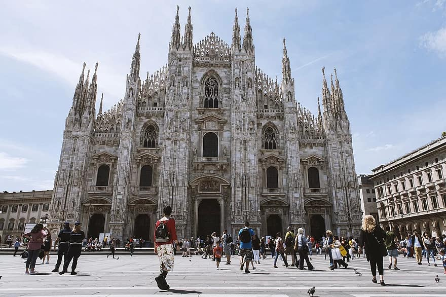
İtaliyanın rəsmi dili italyan dilidir. Demək olar ki, bütün əhali italyan dilində danışır. Bununla
birlikdə,
ölkədə danışılan dillər arasında İspan, Fransız və İngilis dilləri də var. İtaliyada yaşayan əhalinin demək
olar
ki, əksəriyyəti Roma Katolik Kilsəsi ilə əlaqəlidir. Ancaq yəhudilərin çox olduğu ölkələrdən biridir. Son
80-90 il ərzində Şimali Afrika və Asiyadan İtaliyaya köçlər olmuşdur. Bu köçlər nəticəsində müsəlman və
Buddist əhali də artdı.
İtaliya tarixi
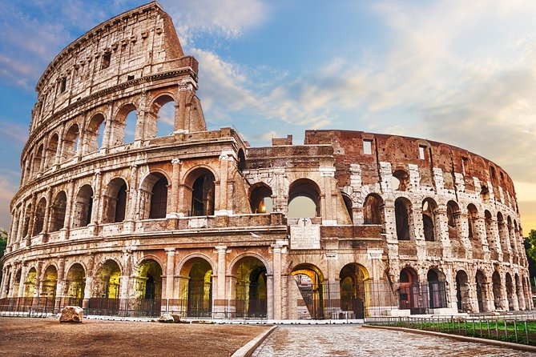
İtaliyanın 200 min illik bir tarixi var. Romalılardan əvvəl Avropa və Asiyada bir
çox insan yaşayırdı. Eramızdan əvvəl I əsrdə Julius Sezar Roma İmperatorluğunu genişləndirdi. Roma
İmperiyası İngiltərədən Farsadək olan bölgədə şərqə və qərbə bölünür. Çox böyük bir ərazi Roma imperiyasına
bağlı idi. Roma İmperiyası dünya tarixinə təsir edən ən böyük imperiyalardan biridir. Orta əsrlərdə Roma
İmperiyası qərb və şərq hissələrə bölündü, sonra əvvəlcə Qərbi Roma İmperiyası çökdü, sonra Şərqi Roma
İmperiyası məhv edildi və kiçik krallıqlara bölündü. İtaliya ərazisində Qərbi Roma İmperiyasının qalıqları
qaldı. İtaliya əvvəlcə İntibah dövrü ilə Avropa sivilizasiyasını meydana gətirdi, sonra İtaliya Müqəddəs
Roma İmperatorluğunun hakimiyyəti altına girdi. Sonra Avropanın demək olar ki, ən böyük gücünə malik
ölkələrindən biri oldu. Daha sonra, 19 -cu əsrdə millətçi hərəkat çoxsaylı müharibələr yaşadı və 871 -ci
ildə milli müstəqilliyini elan etdi və indi İtaliya respublikasıdır.
İtaliyanın iqlimi
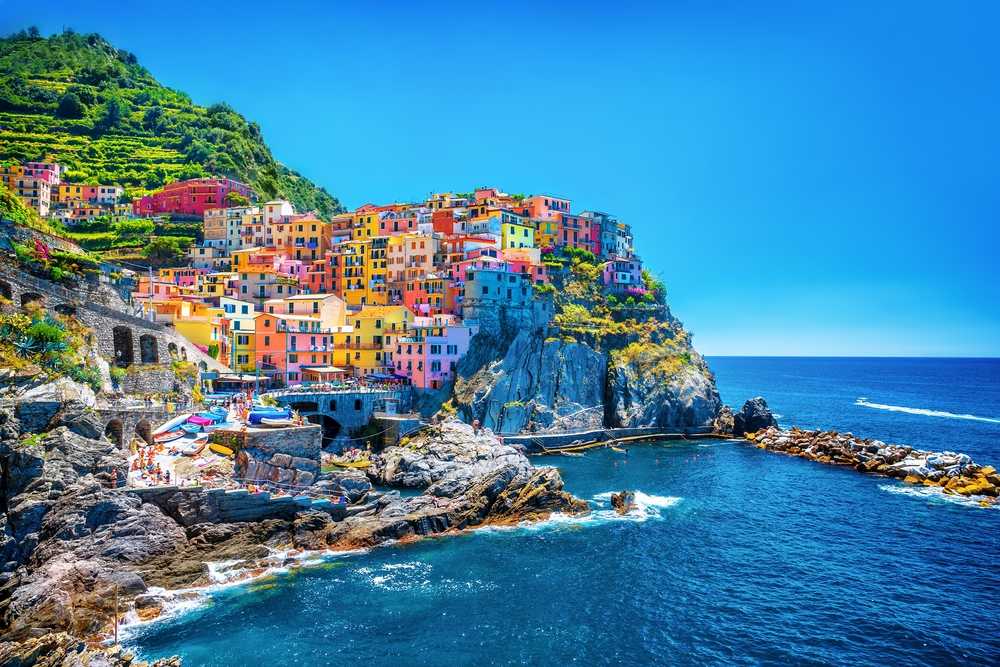
İtaliyada çoxlu iqlim dəyişikliyi var. Şimal hissələrində kontinental iqlim üstünlük təşkil
edir.Dəniz və mərkəzi bölgələrə gəldikdə tropik bir iqlim görülür. Aralıq dənizi iqlimi ölkənin cənub sahil
hissələrində müşahidə olunur. Qışda temperatur 0 dərəcəyə enir, orta qış temperaturu 12 dərəcə civarındadır.
Yaz 20 dərəcə ilə 30 dərəcə arasında dəyişir. İtaliyanın şimalında Alp dağları sayəsində iqlimi hiss olunur.
Bu səbəbdən bu bölgədə yaz qısa, qış qarlı və soyuq keçir. Şimala gəldikdə, quruda sıx kontinental bir iqlim
görülür, cənubda, sahil bölgələrində Aralıq dənizi iqlimi olduğu üçün isti və yağışsız bir iqlim, qışda daha
isti bir iqlim müşahidə olunur.
İtalyan mətbəxi
İtalyan mətbəxi dünyanın ən zəngin və ən müxtəlif mətbəxlərindən biridir. Ancaq İtaliyanın fərqli
bölgələrində fərqli yemək mədəniyyətləri var. İtalyan mətbəxində pendir növləri və şərab əvəzolunmazdır.
Eyni şəkildə, qəhvə və espresso İtaliyanın əvəzolunmaz içkilərindəndir. İtaliyanın qəhvə mədəniyyəti
köklüdür. İtalyan yeməkləri əsasən qırmızı ət yeməkləridir. İtaliyada dəniz məhsulları və qabıqlı balıqlar
çoxdur. İtaliyanın ən məşhur yeməkləri makarondur. Makaron İtalyan mətbəxinin ən zəngin hissəsidir. Çox
fərqli makaron növləri hazırlanır. Makaronlar evdə hazırlandıqda ümumiyyətlə çox dadlıdır. İtalyan ev
yeməkləri çox dadlıdır. Restoranlarda verilən yeməklər ləzzətlidir. İtalyan pizza İtalyan mətbəxinin ən
vacib yeməklərindən biridir. Pizzalar odun sobasında bişirildiyindən çox fərqli dadlara malikdir. Pizza ən
çox istehsal edildiyi şəhər Neapoldur. Neapoldakı pizzalar Mozzarella pendiri ilə birləşdirilmişdir. Bundan
əlavə, pendir mədəniyyətinin çox inkişaf etdiyi İtaliyada, demək olar ki, bütün yeməklər üçün restoranlarda
Parmesan və Parma pendirləri yeyilir. İtalyan mətbəxinə aid olan Risotto, Lasagna və Tiramisu, ləzzətli
İtalyan yeməkləridir. Zeytun yağı yeməklərində ən çox ixtisaslaşmış ölkələrdən biri İtaliyadır. Parmesan və
Parma pendirləri restoranlarda demək olar ki, bütün yeməklər üçün yeyilir. İtalyan mətbəxinə aid olan
Risotto, Lasagna və Tiramisu, ləzzətli İtalyan yeməkləridir. Zeytun yağı yeməklərində ən çox ixtisaslaşmış
ölkələrdən biri İtaliyadır. Parmesan və Parma pendirləri restoranlarda demək olar ki, bütün yeməklər üçün
yeyilir. İtalyan mətbəxinə aid olan Risotto, Lasagna və Tiramisu, ləzzətli İtalyan yeməkləridir. Zeytun yağı
yeməklərində ən çox ixtisaslaşmış ölkələrdən biri İtaliyadır.
İtaliyada təhsil sistemi
İtaliyada ibtidai təhsil 6 yaşından başlayır və ibtidai məktəb 5 il davam edir. İtaliyada icbari
təhsil 8
il, 3 il orta məktəb və 5 il orta məktəbdir. Orta təhsilini başa vuran tələbələr, hər hansı bir peşə üzrə
mütəxəssis olmaq istədikləri zaman Universitet şöbələrinə daxil ola bilərlər. Bu səbəbdən əvvəlcə imtahan
verirlər və 2 illik kollec təhsili alırlar. Bundan əlavə, İtaliyada sənət məktəbləri, peşə təhsili verən
texniki liseylər və peşə liseyləri var. Universitet təhsili liseydir, liseyi bitirən şagirdlərin universitet
imtahanına girməsi tələb olunur. Bunun üçün bir bacarıq imtahanı keçirilir, ona girmək üçün 12 illik orta
təhsili bitirməlidirlər.
İtaliyada səyahət ediləcək şəhərlər
İtaliyaya səyahət etməyi planlaşdırırsınızsa, əvvəlcə Şengen vizasına sahib olmalısınız. Avropanın ən
çox
əhalisi olan 4 ölkəsindən biri olan İtaliyada ziyarət edə biləcəyiniz çox gözəl şəhərlər var:
Roma

Roma İtaliyanın ən gözəl şəhərlərindən biridir. İtaliyanın paytaxtı Roma, orta əsrlərə aid bir çox
abidə,
kilsə, çeşmələr, muzeylər və Rönesans əsərləri olan bir muzey kimi bir şəhərdir. İtaliyanın Romasında
dünyanın 7 möcüzəsindən biri olan Kolezyumu da ziyarət edə bilərsiniz. Bundan əlavə, Qədim Roma Məbədi
İtaliyada ziyarət ediləcək yerlərdən biridir.
Venesiya
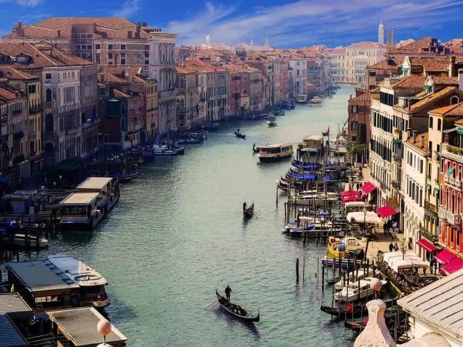
Venesiya İtaliyanın ən orijinal şəhərlərindən biridir. Venesiya İtaliyanın ən romantik şəhərlərindən
biridir. Bura baxanda Venesiyanın üzən bir şəhər olduğunu düşünürsən. Memarlıq sənət əsərləri və buradakı
gondolçuların yaratdığı mühit möhtəşəm obrazlar yaradır. Venesiya küçələri körpülərlə bağlanır. Venesiyada
Müqəddəs Mark Meydanı və Bizans memarlığından hazırlanmış bazilikası mütləq görülməyə dəyər.
Florensiya
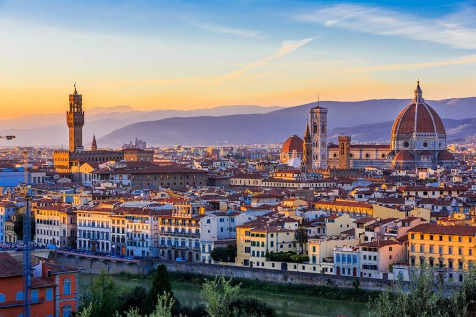
Florensiya İntibahın başlanğıc nöqtəsi olaraq bilinən şəhərlərdən biridir. Dünyanın aparıcı
şəhərlərindən biridir. Burada Arno çayı, İtaliya kafedralları, Santa Maria del Fiore, Palazzo və Vecchio
kimi İntibah memarlıq nümunələrini ziyarət edə bilərsiniz. Əlavə olaraq, Leonardo Da Vinçi, Mikelancelo və
Dante kimi rəssamları yetişdirən İntibah dövrünə aid heykəlləri, rəsmləri və sənət əsərlərini görməyi
məsləhət görürük.
Milan
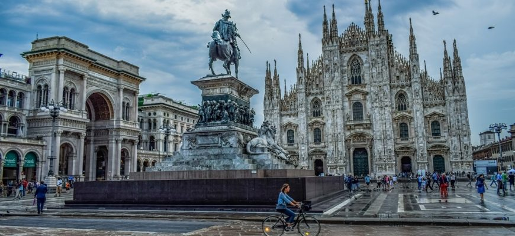
Milan həm İtaliyada, həm də Avropada sənət baxımından ən zəngin şəhərlərdən biridir. Tam Avropa
metropolisidir. Burada moda məktəbləri və moda yönümlü alış-veriş mağazaları tapa bilərsiniz. Əlavə olaraq,
dünyanın ən qədim ticarət mərkəzi olan Duomo di Milano, dünyanın ən qədim ticarət mərkəzi Vittoria, Emanuel
tərəfindən dünyanın ən böyük teatr binası və Leonardo Da Vinçinin son şam yeməyi rəsmini görməliyik.
Napoli
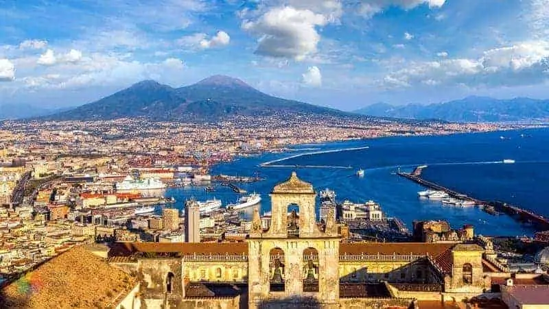
Napoli, Roma və Milandan sonra İtaliyanın ən böyük şəhərlərindən biridir. Tarixi baxımdan son dərəcə
zəngindir. UNESCO -nun Dünya İrsi Siyahısına da daxil edilmişdir. Napoli İtaliyanın cənub hissəsində
yerləşir. Buranın çox köhnə bir şəhər mərkəzi var. Vezüv vulkanının aktivləşməsi nəticəsində əmələ gəlmiş
daşlaşmış qədim Pompei şəhəri var. Əlavə olaraq, Neapol krallığından Avropanın ən böyük Sarayı burada.
Verona
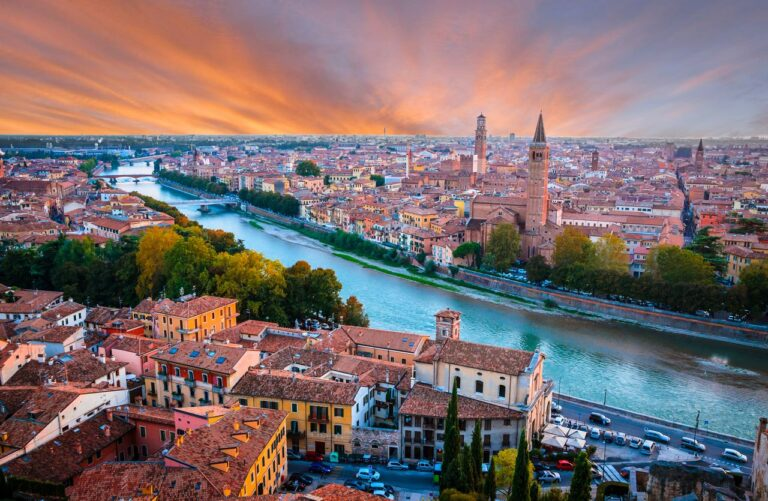
Verano Roma dövründə yaşamış bir şəhərdir. Bu, Romeo və Cülyetta hekayəsi ilə tanınan şəhərlərdən
biridir. Qədim dövrlərdən qalma klassik əsərlərin olması səbəbindən bura həm də UNESCO -nun Dünya İrsi
Siyahısındadır. Burada sənət festivalları və sənət fəaliyyətləri çox keçirilir. Bədii mənada adı çəkilən
şəhərlərdən biridir. Bu, İtaliyada ən çox turist gələn şəhərdir. Həm də ən çox ziyarət edilən yerlərdən
biridir. Romeo və Cülyettanın evi Ponte di Pietra Arco di Gavi, görülməli yerlərdən biridir.
Torino
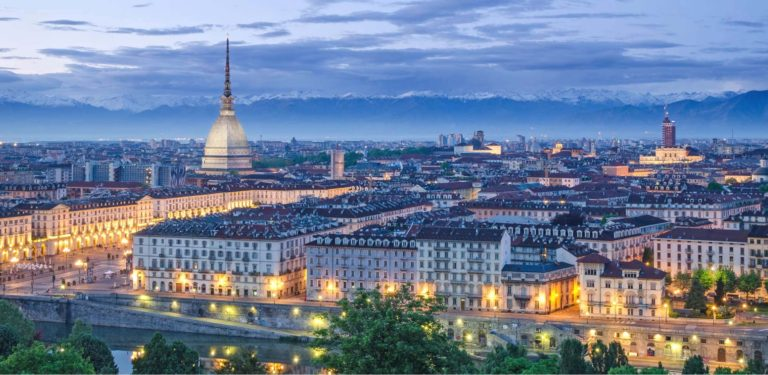
Torino, sənət əsərləri, tarixi muzeyləri və tarixi əsərləri olan İtaliyadakı şəhərlərdən biridir.
Həmçinin 2006 -cı ildə Turində Qış Olimpiya Oyunları keçirildi. Möhtəşəm muzeyləri olan şəhərdə çox şık
geyimləri, zərif dükanları, restoranları, Mədəniyyət Mərkəzi olan köhnə İtalyan memarlığını da görə
bilərsiniz. Barok memarlığı burada ən çox üstünlük təşkil edir. Baron memarlıq üslubunda tikilmiş saraylar
möhtəşəmdir və görülməyə dəyər. Mole Antonelliana, Palatine Tower turist katedrali, görülməli yerlərdən
biridir. Ayrıca, şimal -qərb hissəsinə gedirsinizsə, Turin Ponyini və Alp dağlarını seyr edə bilərsiniz.
Boloniya
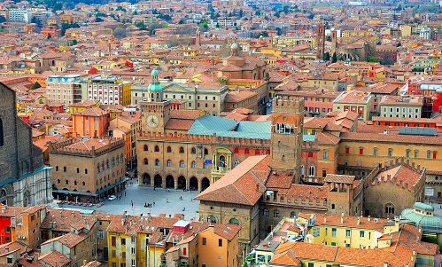
Boloniya orta əsr memarlığının mərkəzində bir şəhərdir. İtaliyanın şimal hissəsində yerləşir.
Sosialist siyasi baxışları və qırmızı kərpic binaları olan bir kommunist Qırmızı şəhərdir. Eyni zamanda
Avropanın ən qədim universitetlərindən biri də bu şəhərdə yerləşir. Bundan əlavə, Neptun Çeşməsi, Torri Di
Bolonya, Manolya Meydanı mütləq görülməli yerlərdir.
Perugia
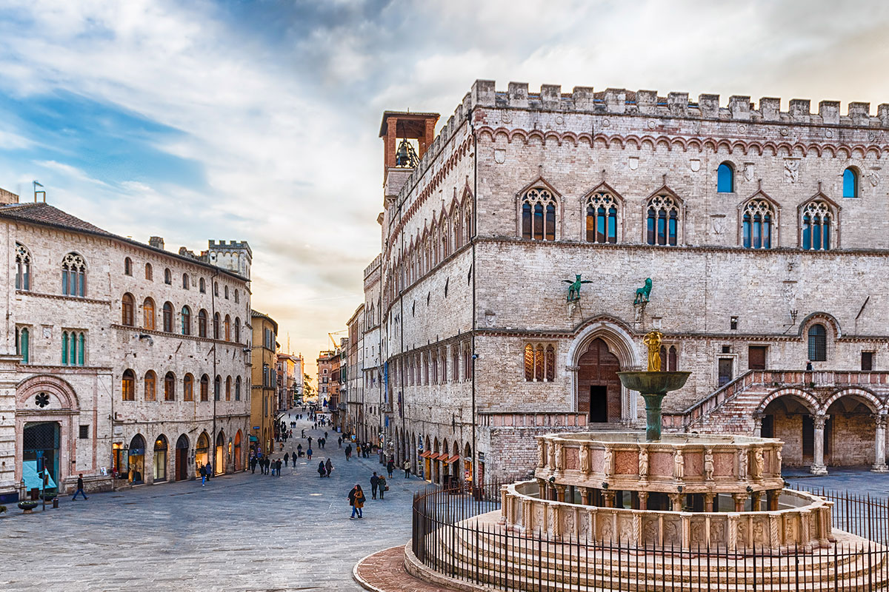
Perugia, keçən əsrə qədər İtaliyanın ortasında yerləşən bir şəhərdir. Həm də Umbria Bölgəsinin
paytaxtıdır. Eramızdan əvvəl 9 -cu əsrdə bir vadidə qurulmuşdur. Şəhərin vadiyə gözəl mənzərəsi var. Bu
şəhərdə iki universitet var. Tələbələr fərqli ölkələrdən gəldikləri üçün buranın əhalisi olduqca
kozmopolitdir. Xaricilər bu şəhərə italyan dilini öyrənmək üçün gəlirlər. Yaz aylarında bu şəhərdə məşhur
caz festivalları da keçirilir. Məşhur Colegio Del Cambio rəsmləri ilə Galleria Nazionale Del Umbria, mütləq
görməli olduğunuz yerlərdən biridir.
Genoa
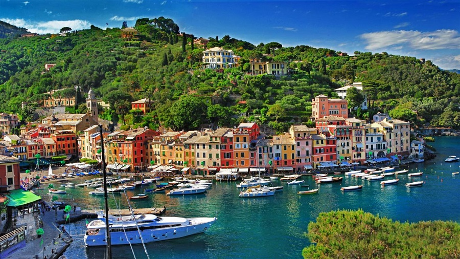
Genoa İtaliyanın şimal -qərbində yerləşir. Bura ən böyük liman şəhərlərindən biridir. Kristofer
Kolumbun doğulduğu yer kimi tanınan şəhərdir. 2004 -cü ildə Cenova Avropa mədəniyyət paytaxtı elan edildi.
Burada Palazzi Dei Rolli, San Lorenzo katedrali, Teria Feneri, Porto Antico kimi bir çox tarixi abidəni
ziyarət edə bilərsiniz. Bundan əlavə, Genoa orta əsrlərə aid tarixi əsərlərə ev sahibliyi edən bir
şəhərdir. Bir çox saray və muzey var.
İstinadlar